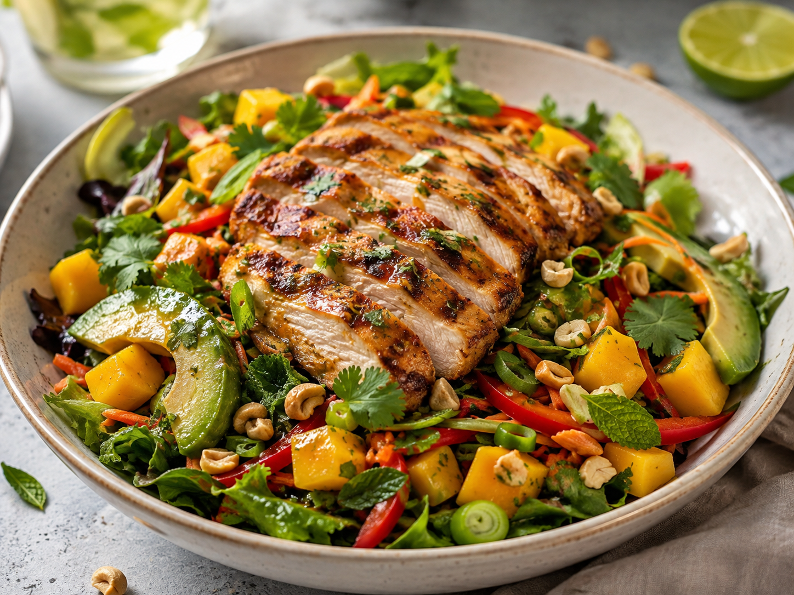

Fresh · 35 min01 · Summer bowl
Grilled Chicken & Mango Salad
Charred chicken, ripe mango, avocado, herbs and cashews with a bright lime-honey dressing.
Private recipe collection
A small collection of food worth making twice.
Created by Damien Dufour
Damien's kitchen
A personal collection of polished, gluten- and lactose-free-friendly recipes designed for easy cooking and elegant plating.
Recipe collection

Fresh · 35 min01 · Summer bowl
Charred chicken, ripe mango, avocado, herbs and cashews with a bright lime-honey dressing.
02 · Bistro plate
Rosemary potatoes, honey carrots, green beans and a glossy red-wine jus.
03 · Autumn plate
Crisp-skinned duck with silky sweet potato, glazed carrots and cranberry-orange sauce.
Grilled Chicken & Mango Salad
Use a wide shallow bowl. Keep the chicken centred and slightly elevated, with mango and avocado visible around the edges. Finish with herbs, cashews and a final ribbon of dressing.
Lamb Chops & Mint Sauce
Set three chops in a loose fan, potatoes to one side, carrots and beans in neat bundles, then spoon jus around the meat. Keep the mint sauce in small accents rather than covering the crust.
Duck, Sweet Potato & Cranberry
Swipe sweet potato across the plate, fan the duck slices over the edge of it, arrange carrots opposite and dot cranberry sauce around the plate. Keep the crisp skin exposed.
One trip
Tap items as you shop. Your progress stays saved on this device.